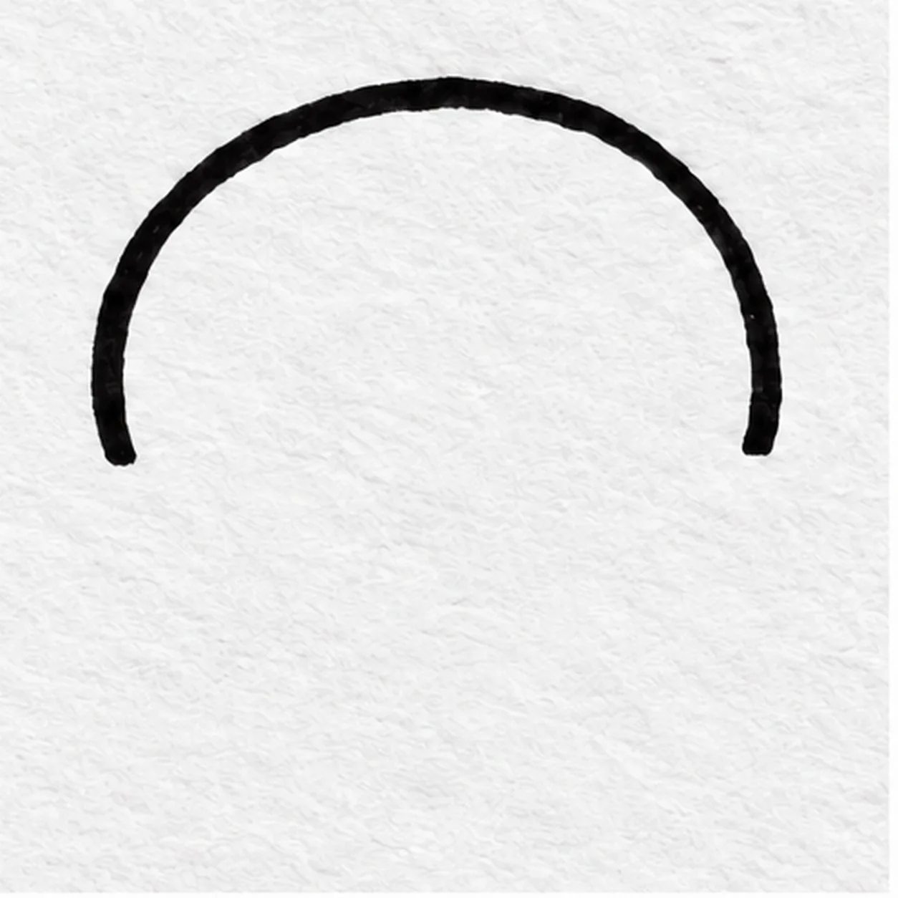
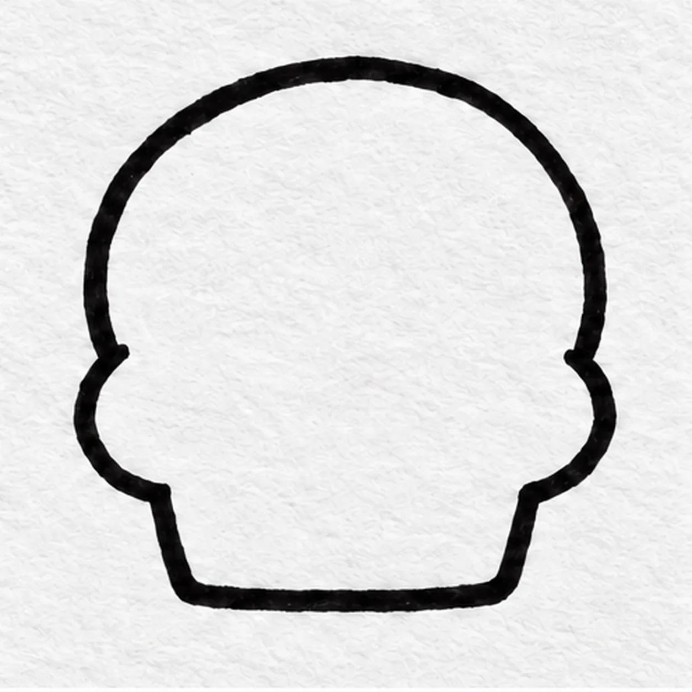
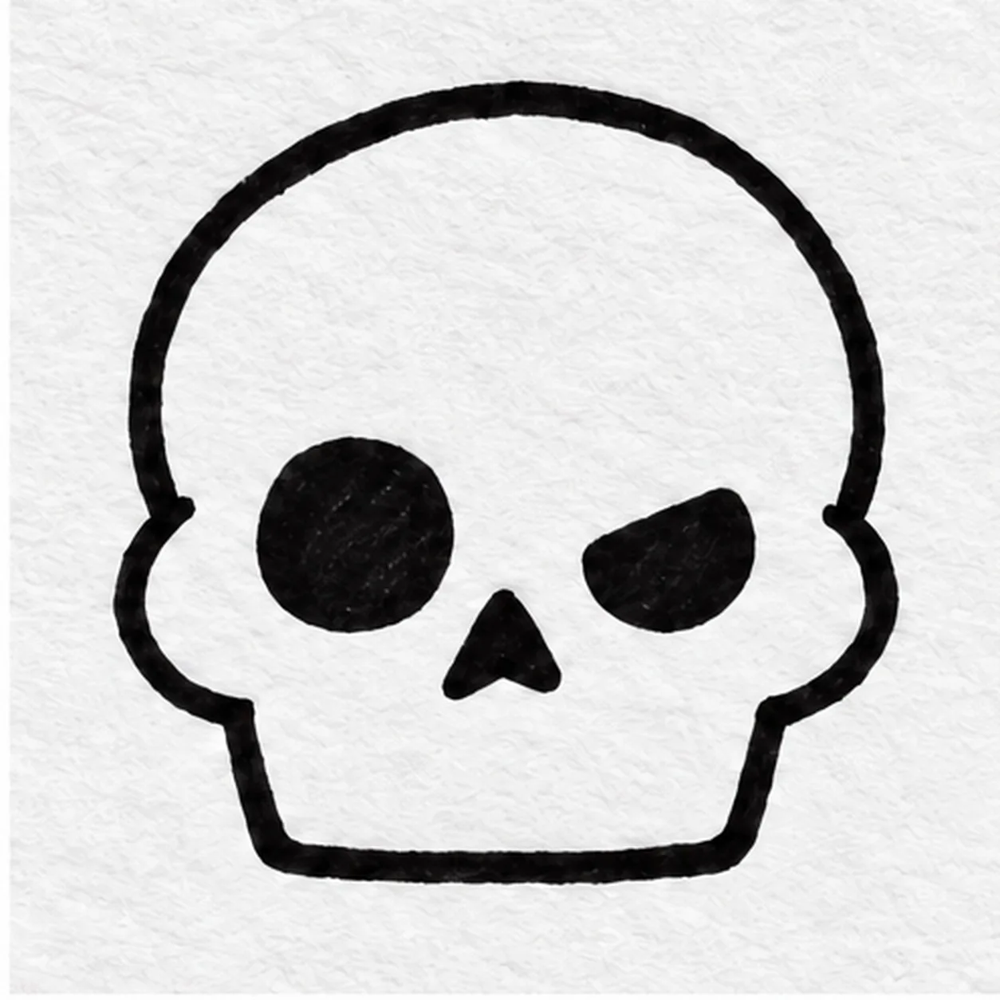
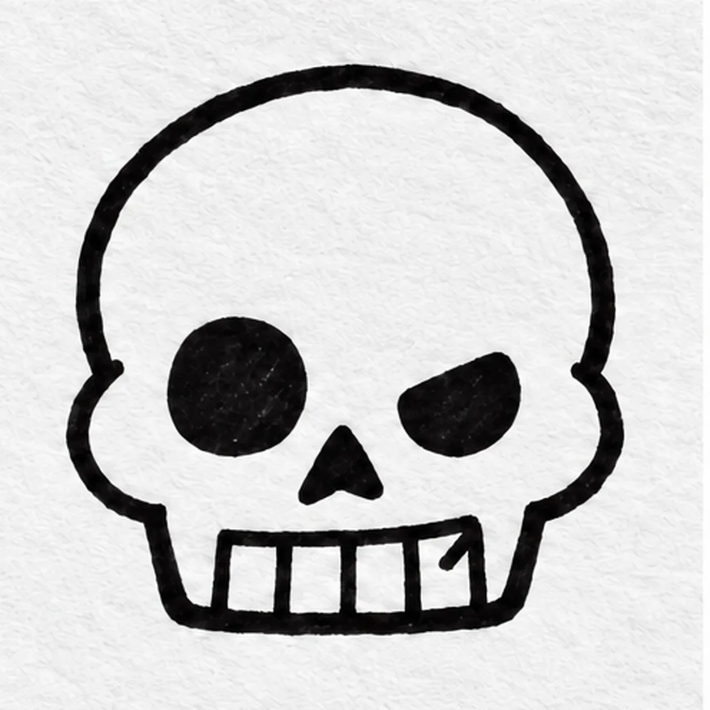
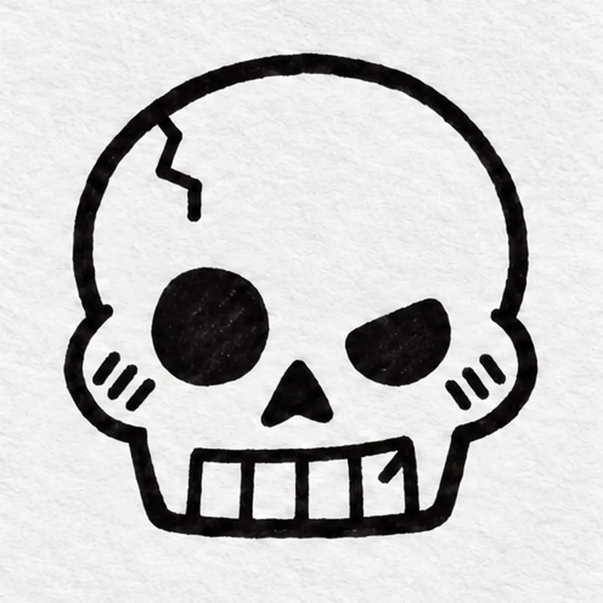

Felt-tip marker mode
Let's draw a cartoon skull
Treat this as one playful practice round: sketch the idea loosely, simplify the shapes, then commit with confident marker outlines and bright fills.
-
01

Dome the cranium
Start at the lower left and sweep a broad, slightly uneven arc over the top to the lower right; leave both lower ends open for cheeks.
Marker tip: Ghost the dome in the air before pulling the broad marker arc.
-
02

Connect cheeks and jaw
Turn each open end inward into a rounded cheek, then pull both sides down to a short broad jaw and join the bottom edge.
Marker tip: The jaw closes at this step and stays fixed while you add internal details.
-
03

Set the crooked expression
Draw one generous oval eye hollow at left, a smaller slanted hollow at right, and a tiny inverted triangle nose between them.
Marker tip: Make the right hollow smaller and slanted for a crooked expression.
-
04

Shape four teeth and the chip
Inside the already closed jaw, divide the front row into four teeth with three short vertical separations. Put one little diagonal chip mark inside the upper corner of the rightmost tooth; leave the outer jaw line intact.
Marker tip: Count four teeth, then make the little diagonal chip mark inside the rightmost one.
-
05

Crack the temple
Draw one short bent crack from the upper left temple inward. Under each eye hollow, make three short diagonal cheek hatches, keeping the tooth chip clear.
Marker tip: Count three short hatches on each cheek; change their angle if you want your own expression.
-
06

Color the cheeky skull
Let the black marker dry, then pull warm ivory strokes across the established skull shape. Keep both eye hollows and the nose black; touch teal around the three hatch strokes on each cheek, and leave the four teeth mostly pale. Add no new contour.
Marker tip: Pull the ivory strokes in one direction and leave dry-paper gaps for a handmade marker texture.